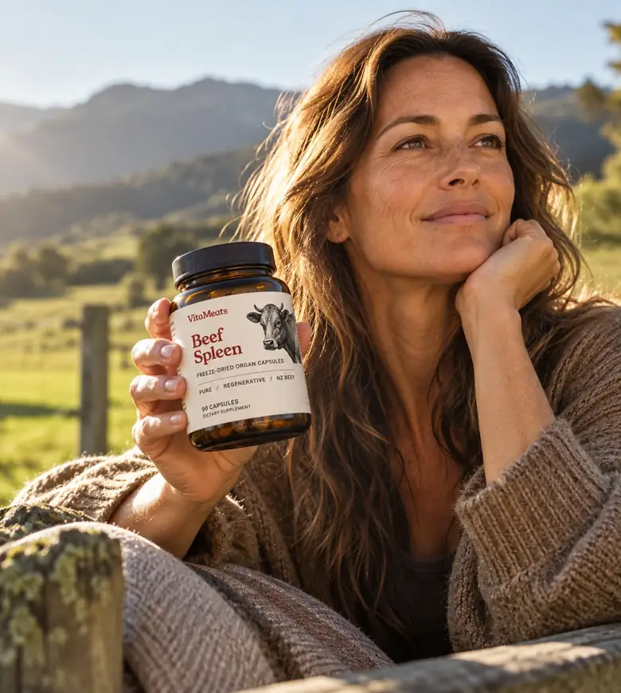
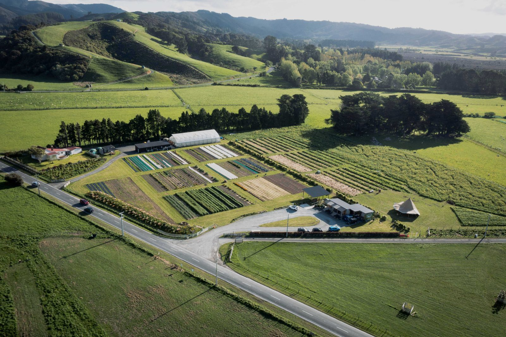
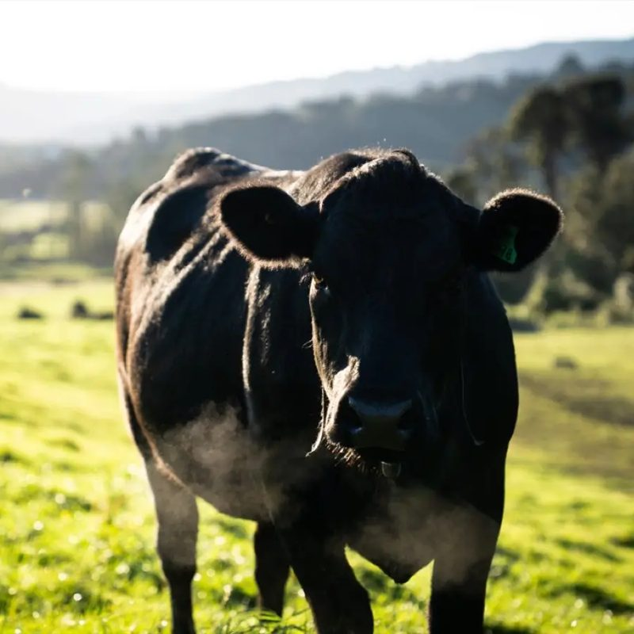

Heavy cycles at any age
Month after month, heavy flow keeps drawing on your iron stores.
Spleen is the new liver.
In your 40s, cycles can get heavier and your iron can slip without you noticing. VitaMeats puts it back the way food always has - half beef liver, half beef spleen, from one regenerative farm in New Zealand.

Perimenopause can start years before your periods stop. One of the first changes for many women is the cycle itself - it gets longer, shorter, or noticeably heavier.
Every heavy period takes iron with it. Iron is what your body uses to build red blood cells, and red blood cells carry oxygen to every part of you. When iron goes out faster than it comes in, your stores slowly run down.
It rarely shows up as one big moment. It's more like this:
These signs can have lots of causes, so it's worth asking your doctor for an iron panel, including ferritin. But if your levels are on the low side, food is one of the most natural places to start.
Most women are told to "eat more red meat". Very few are told which parts of the animal actually carry the iron.
And it isn't only perimenopause. The same slow drain happens in a few other places:
Month after month, heavy flow keeps drawing on your iron stores.

More effort means more demand on the oxygen your blood carries.

Smaller meals can mean less iron and B12 coming in each day.
There are two kinds of iron in food. Your body treats them very differently.
Heme iron comes from animal foods. It's absorbed through its own pathway, so your body takes up more of it.
Non-heme iron comes from plants and most standard iron tablets. It's absorbed less well, and many people find iron tablets hard on the stomach.
So the question isn't just "how much iron?" It's "which kind, and from where?"
The original multivitamin. Rich in vitamin A, B12 and folate, plus copper, which helps your body use iron.
The spleen recycles old red blood cells, so it's one of the richest food sources of heme iron there is - and it's low in vitamin A.
Together they balance each other: spleen brings the iron, liver brings the B vitamins and copper, and a 50/50 split keeps vitamin A sensible. [Wireframe: swap ratings for per-serve lab values.]
Most women notice a difference over 2-3 months. That's why most choose 3 jars.
Organs store what the animal eats. So we only use one farm we can stand behind.
Mangaroa Farms sits beside the Mangaroa River in Te Awa Kairangi, the Hutt Valley, just out of Wellington. It started as a run-down dairy block and a pine plantation. Today it's a living laboratory for regenerative farming - pasture, market gardens and native forest, side by side.
The cattle are Angus and Angus-cross, moved through diverse pasture with low-stress handling, and given kelp, salt and minerals. Their grazing builds the soil. The soil grows richer pasture. That shows up in the animal, and in the organs.
The farm was gifted into a charitable trust, Biome Trust, and runs as a nonprofit. Every jar helps fund that work.



You read labels. You'd pick a farm over a factory. You just don't have time to cook liver on a Tuesday night.
| Feature | VitaMeats | Typical organ blend | Standard iron tablet |
|---|---|---|---|
| Iron type | Heme, from food | Mostly from liver | Usually non-heme |
| Spleen content | 50% | Around 20% or none | None |
| Origin | One named NZ farm | "NZ" or "grass-fed" | Lab-made |
| Fillers or flow agents | None | Varies | Common |
| Also brings | B12, folate, vitamin A, copper | B12, vitamin A | Iron only |

[Quote from a women's health practitioner on heme iron, perimenopause and food-first nutrition.] [Name, credentials - e.g. registered dietitian or women's health GP]
Two capsules a day with food for the first week.
Move to four capsules, or one sachet, a day.
Food-based iron works gently. Most people feel it over weeks, not days.
Re-test your ferritin with your doctor to see where you're at.

[Verified review - perimenopause, energy]

[Verified review - heavy cycles]

[Verified review - broth booster]

We host practitioners, coaches and creators at Woodcote, the original homestead at Mangaroa.
Walk the paddocks. Meet the cattle. Learn how regenerative grazing rebuilds soil. Then tell the story your way.
Apply to visitCan't find it here? Email us and a real person will reply.
Most iron tablets use non-heme iron. VitaMeats is whole food, so the iron comes as heme iron, along with B12, folate and copper that naturally come with it.
Liver is rich in vitamin A, B12 and folate. Spleen is one of the best food sources of heme iron, and it's low in vitamin A. Blending them gives you more iron per serve without overdoing vitamin A.
Iron stores rebuild slowly. Most people give it 2-3 months, which is why the 3 jar pack is our most popular and why the guarantee is 90 days.
Email us within 90 days and we'll refund you in full, even if the jars are empty.
Angus and Angus-cross cattle raised at Mangaroa Farms in Upper Hutt, New Zealand. Grass-fed and finished, with no added hormones or antibiotics.
Capsules are taste-free. The broth booster is mild and savoury - it disappears into a hot broth or soup.
Talk to your doctor or midwife first. Liver contains vitamin A, and iron can interact with some medications. If you have a condition that affects iron storage, don't take this without medical advice.
Yes. One click in your account, anytime. No fees, no minimum term.
Half liver, half spleen, from one farm in New Zealand. Backed by a 90-day guarantee.
Choose your supplySeasonal updates from Mangaroa, and 10% off your first order.